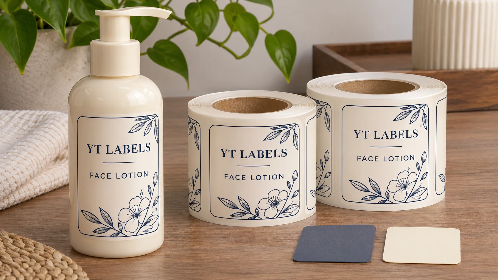
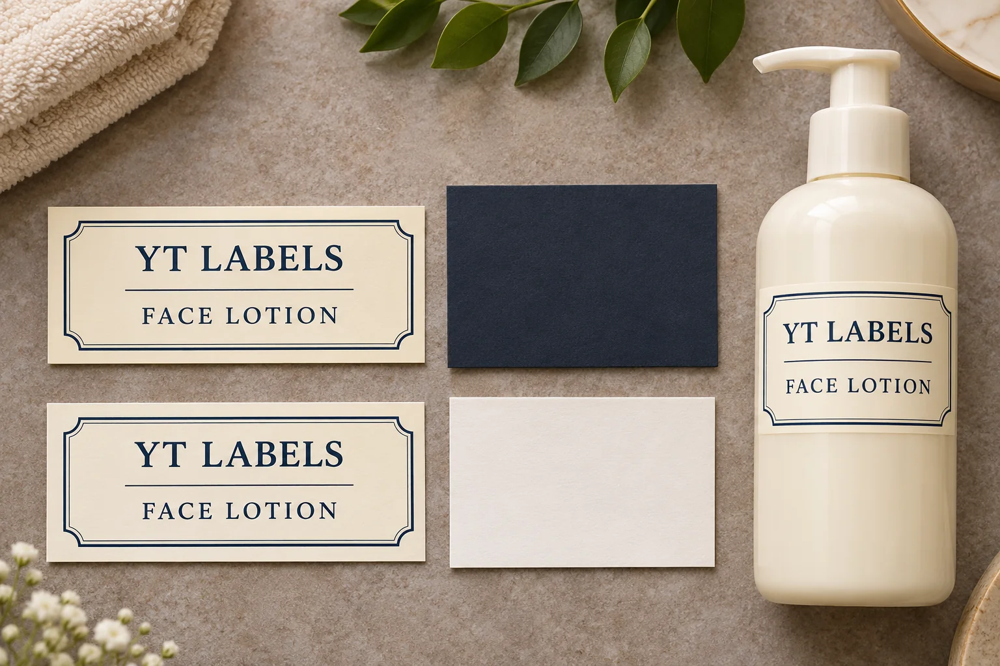

Specify a named label construction when the finished result depends on a combination your team has already approved and needs to repeat. Consider a requirements-based brief when you want the printer to propose materials and you can review each candidate against observable use conditions. In both cases, identify the final approved construction before bulk release.
The choice comes up when a skincare buyer asks for labels that stay readable and attached after contact with the product. A broad phrase such as “oil resistant” leaves the application, exposure and acceptance decision open. A stock code alone can also leave gaps if it describes raw material while the approved label has a particular print, protection and converting arrangement.

Name what you need the quotation to control
Start with the actual container, surface treatment, label geometry, application route and handling after application. List any required appearance, code printing or exposure condition. Identify which requirements are already backed by an approved sample and which still need testing. Ask the supplier to identify the materials, print and finish it proposes for those requirements.
An Avery Dennison product data sheet illustrates the distinction. It names an individual face material, adhesive and liner, and explains that typical data describes specified test conditions. It recommends checking suitability in real use. The document is an example of how to read a material reference. The appropriate stock and evaluation depend on the actual label project.
For a repeat project, compare your approved sample reference and the proposed construction. For a new project, define the pack and conditions before narrowing to one proposed material. In either situation, agree who decides whether the evidence supports the purchase.
Compare two ways of requesting the quote
| Field | Named construction | Requirements-based brief |
|---|---|---|
| Quoted input | Identify the approved finished combination, references and necessary conditions. | State what the finished label must do on the named pack and application route. |
| Supplier response | Confirm what will be supplied and identify any unavailable or uncertain elements. | Propose individually identified candidates and describe what differs. |
| Review basis | Match the offered and approved references, including current pack and finish. | Evaluate the accepted sample or test evidence for the required conditions. |
| Release note | Record the accepted construction and ask for review of deviations before supplying them. | Record the selected construction and any separately approved alternatives and limits. |
Complete the quoted-input row from the current project record. Ask the supplier to confirm the other rows for its actual offer. You can specify a named stock for one component and request candidates for another when the project supports that combination. Define the boundary clearly enough that the supplier knows which changes need buyer acceptance.

Use evidence to close the purchasing choice
A hypothetical repeat lotion pack has a distinctive finish and an established applicator setup. If the approved combination is available, naming it and checking identifiers may keep the quotation focused. If the retailer needs only a certain accepted appearance and the brand can review another combination, record those checks and ask the supplier to identify its candidate.
A new cream range may have no approved construction at all. Begin with the surface, formula contact and requirements, then use the adhesive sample plan to compare identified samples under the conditions your team agrees. After approving a construction, keep that identity with the order. If the supplier proposes a later change, review the material substitution brief for that separate decision.
Hold release if a mandatory requirement remains vague, if a named reference cannot be matched to the proposed finished label, or if the acceptance process for candidates is open. Ask the supplier to explain what remains available and what needs a sample before final pricing or production release.
Prepare a cosmetic label material brief
Send the bottle, quantities per design, existing approved stock references and handling conditions. State which items should be reproduced and which are open to candidates. Ask for a named construction and a project-specific review plan. The form prepares a message. Share specification files through email or WhatsApp.
Prepare a material specification inquiry